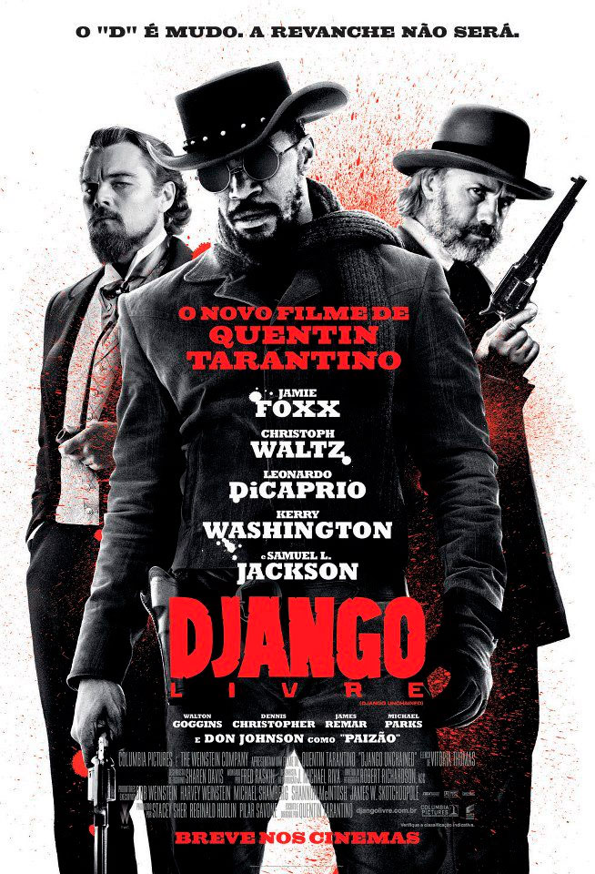

|  |
Diretor: Quentin Tarantino Com: Jamie Foxx, Christoph Waltz, Leonardo DiCaprio Gênero: Ação - Legendado/Dublado Censura: 16 Lançamento: 18 de janeiro de 2013 Tempo de duração: 165 minutos Sinopse: No sul dos Estados Unidos, o ex-escravo Django faz uma aliança inesperada com o caçador de recompensas Schultz para caçar os criminosos mais procurados do país e resgatar sua esposa de um fazendeiro que força seus escravos a participar de competições mortais. Assistir |
 Entrou com: fulano@gmail.com || Sair
Entrou com: fulano@gmail.com || Sair